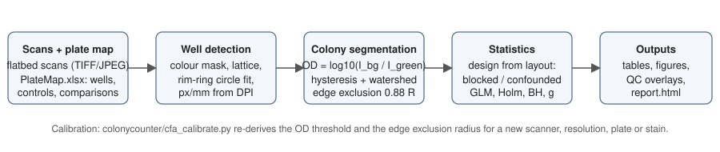

Counts and measures crystal violet stained colonies in colony formation (clonogenic) assays from flatbed scans of 6-, 12-, 24- and 96-well plates, and runs the statistics for the comparison you describe in a plate map.
ColonyCounter locates each well on a scanned plate, converts the stain to optical density against a per-well flat field, segments colonies with explicit handling of the well edge, and returns colony number, colony size distribution, stained area and integrated stain intensity per well. A fillable Excel plate map describes the experimental layout; the statistics are chosen from that layout and the choice is written into the report. One double-click runs everything.

Wells are found from a crystal violet colour index, placed on the plate lattice and refined by fitting the bright rim ring of each well; the pixel scale comes from the file's DPI and is checked against the well pitch.
The green channel is converted to OD so that integrated OD is proportional to dye mass. Colonies are segmented by hysteresis thresholding and a watershed split; only the central 88% of the well radius is analysed, colonies are counted by centroid and sized when fully inside.
Type the condition into each well of PlateMap.xlsx, name the control per cell
line, and optionally list explicit comparisons. One condition per plate, several conditions
on a plate, replicates across plates and two cell lines on a plate are all supported.
Plate enters the model as a blocking factor when the layout allows it, and the report states when it does not. Colony number is modelled by a quasi-Poisson GLM with the analysed area as offset; area and intensity by linear models on the log scale; primary endpoints are Holm-adjusted, secondary endpoints carry Benjamini-Hochberg q-values.
Colony number (scaled to the whole growth surface), stained area fraction, integrated OD per mm², mean and median colony diameter, mean colony area, mean colony OD, and the full per-colony table.
Rate ratio (colony number) or fold change (area, intensity) with 95% confidence interval, adjusted p-values, Games-Howell or Welch p, Mann-Whitney p, and Hedges' g with a bootstrap interval.
Overlays of every well with detected colonies and the analysed region, so every number can be checked against the image it came from.
Every results folder contains run_info.json
with the versions of ColonyCounter and of every dependency that produced it, and
statistics_design.csv with every modelling decision.
Python 3.10 or newer. Three ways, from least to most technical.
Download the repository, then open Run_ColonyCounter.command (macOS) or
Run_ColonyCounter.bat (Windows). It creates its own Python environment, installs
what it needs, writes the plate map on the first run and analyses the plates on the next.
pip install colonycounter (from the first PyPI release, version 1.1.0 onwards)
installs the colonycounter command.
Clone the repository and pip install -e ., as in the quick start below.
# get the code and set up an environment git clone https://github.com/SpencerFrangou/ColonyCounter.git cd ColonyCounter python3 -m venv .venv && source .venv/bin/activate pip install -e . # two synthetic plates with known colony numbers, plus a plate map python examples/make_synthetic_plates.py --out examples/synthetic # check the plate map, run the analysis, open the report colonycounter check examples/synthetic/PlateMap.xlsx colonycounter run examples/synthetic/PlateMap.xlsx --out examples/synthetic/Results open examples/synthetic/Results/report.html
For your own scans, put the images in a folder, run
colonycounter template <folder>, fill in PlateMap.xlsx, and run
colonycounter run <folder>/PlateMap.xlsx. The 6-well geometry was validated on
300 dpi scans; the 12-, 24- and 96-well formats are supported on synthetic plates so far.
cfa_calibrate.py re-derives the two scanner-dependent constants for a new set-up.
README Usage guide Methods Scanner settings Statement of need Changelog bio.tools
Please cite the archived release: Frangou SW. ColonyCounter: quantification of
colony formation assays from plate scans. Zenodo.
doi:10.5281/zenodo.23780010.
A CITATION.cff file is included in the repository.